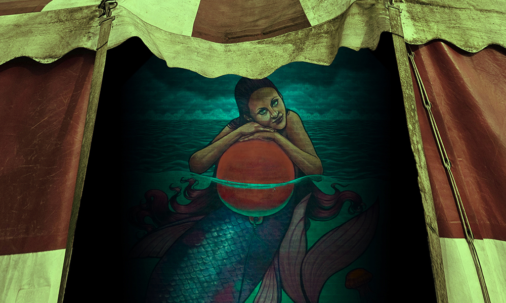

Startups are the crucible of the modern business world, where futures are forged, fortunes are made and lost, careers take off or go down in flames, and pressure can be both the fuel and the fire. Jess Simms takes us to another fledgling C-suite, the place where the hard decisions have to be made. You know, you can't spell ‘executive’ without… breaking a few eggs.
Sometimes you hear the voice of a story in your head as you're reading. Never was there a stronger example of that magic than David Sheskin's short, sly, wall-of-text yarn, which packs more into a piece of flash fiction that words have any right to. For more evidence, I give you our audio version: passed from editor to producer with narry a note, and it sounds exactly the way I imagined it.

From classic greats like Freaks and Nightmare Alley we get the enticing notion of the travelling carnival as a home to the abandoned, the desperate, the reviled, the unloved: a found family of outsiders, who in turn treat as outsiders the punters they lure in with promises of salacious thrills. Arlen Feldmen mines these rich depths to strike a tragic vein, as one person’s opportunity to build a new life only leaves ’em wanting more…
When your friend stands at the cliff’s edge, do you ever feel the echo of an urge to push, though you never would? When the wedding gets to ‘speak now or forever hold your peace’ are you tempted to raise your voice, even if you have no reason to? Could be everyone experiences something like that at a point in their life – P. R. O’Leary maybe more often than many.
American creatives… always slotting the word ‘American’ into their titles. Psycho. Graffiti. Hustle. Idiot. Why do they do it? We’ll never know. And in this case? Well, it turns out ‘hitsuzen’ is a Japanese term more or less meaning ‘according to a plan’. So when Michael Bettendorf calls this ‘American Hitsuzen’, is he saying…? No. No, he couldn’t be.
One of the things the editor enjoys in a good horror story is uncertainty regarding the how real the horror is. Was Jack Torrance haunted by the Overlook Hotel, or merely an unstable man descending into murderous psychopathy? Stripped of its supernatural trappings The Shining would be a crime story - and here Kirk Bueckert gives us a similarly borderline case study to consider.
Bill Ryan’s biannual sojourn returns him to these shores to receive a seasonally warm welcome, once again to expose us to his thoughts on an example of crime novel writing – or should that be ‘criminal’? Best let him decide.
Bringing both our issue and the year to a resounding close, it is the editor's pleasure to introduce a number more crime stories published elsewhere in 2024 to the reader's attention. So, if the six tales you've found here have but whet your appetite, let's make it an even dozen with four firm recommendations and a couple of not-bads!